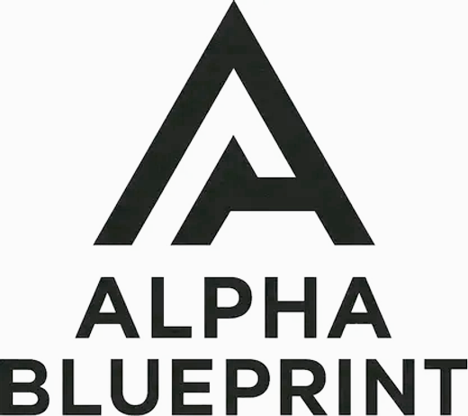

Du orientierst dich neu
Du willst mit gefragten Zukunftsskills wieder durchstarten. KI-Wissen macht dich für Arbeitgeber attraktiv – ganz ohne Studium.


Für Arbeitssuchende · 100 % gefördert
Deine KI-Weiterbildung wird zu 100 % über deinen Bildungsgutschein gefördert. Praxisnah, verständlich und ganz ohne Vorkenntnisse – dein Start in eine zukunftssichere Zukunft. Gemeinsam mit AZAV-zugelassenen Bildungsträgern begleiten wir dich vom Antrag bis zum Zertifikat.
Kostenlosen Förder-Check startenFür dich kostenlos – dank Förderung
Du musst keinen Cent zahlen. Mit einem bewilligten Bildungsgutschein übernimmt die Agentur für Arbeit oder das Jobcenter die kompletten Kosten deiner KI-Weiterbildung – inklusive Prüfung und Lernmaterial.
Unsere Partner sind AZAV-zugelassene Bildungsträger – die Voraussetzung dafür, dass du deinen Gutschein für ihre Kurse einlösen kannst. Wir finden mit dir den passenden Kurs. Ob du gefördert wirst, klären wir gemeinsam – kostenlos und unverbindlich.
Diese Weiterbildung ist für dich, wenn …
Du willst mit gefragten Zukunftsskills wieder durchstarten. KI-Wissen macht dich für Arbeitgeber attraktiv – ganz ohne Studium.
KI verändert die Arbeitswelt rasant. Mit den richtigen Skills bleibst du gefragt, statt den Anschluss zu verlieren.
Kein Problem. Unsere Kurse sind für Quereinsteiger gemacht – ohne Programmieren, ohne Technik-Stress. Wir starten bei null.
Das nimmst du mit
Du lernst nicht für die Schublade, sondern für echte Aufgaben im Job und Alltag. Statt trockener Theorie stehen praktische Projekte im Mittelpunkt.
Dauer und Format richten sich nach dem Kurs – im kostenlosen Erstgespräch finden wir gemeinsam den passenden für dich.
So einfach geht's
Du meldest dich unverbindlich. Wir klären gemeinsam, ob und wie du gefördert wirst.
Wir unterstützen dich beim Antrag bei der Agentur für Arbeit oder dem Jobcenter.
Du startest deine KI-Weiterbildung – mit persönlicher Begleitung an deiner Seite.
Häufige Fragen
Nichts. Mit einem bewilligten Bildungsgutschein übernimmt die Agentur für Arbeit oder das Jobcenter 100 % der Kurskosten – inklusive Prüfung und Lernmaterial. Für dich entstehen keine Kosten.
Nein. Unsere geförderten KI-Kurse sind für Quereinsteiger ohne Vorkenntnisse konzipiert. Wir starten bei null und begleiten dich Schritt für Schritt – ganz ohne Technik-Stress.
Du beantragst den Bildungsgutschein bei deiner Agentur für Arbeit oder deinem Jobcenter. Wir unterstützen dich beim Antrag und allen nötigen Unterlagen und vermitteln dir den passenden Kurs eines AZAV-zugelassenen Trägers.
Die Kurse werden von AZAV-zugelassenen Bildungsträgern durchgeführt, mit denen wir zusammenarbeiten. Alpha Blueprint vermittelt dir den passenden Kurs und begleitet dich beim Bildungsgutschein. Die AZAV-Zulassung des Trägers ist die Voraussetzung für die 100 % Förderung.
Mehr dazu: Förderwege für Unternehmen, zertifizierte KI-Kurse und KI im Arbeitsalltag.
Finde in einem kostenlosen, unverbindlichen Gespräch heraus, ob deine Weiterbildung gefördert wird – und wie du starten kannst. Kein Risiko, keine versteckten Kosten.
Kostenlosen Förder-Check sichern